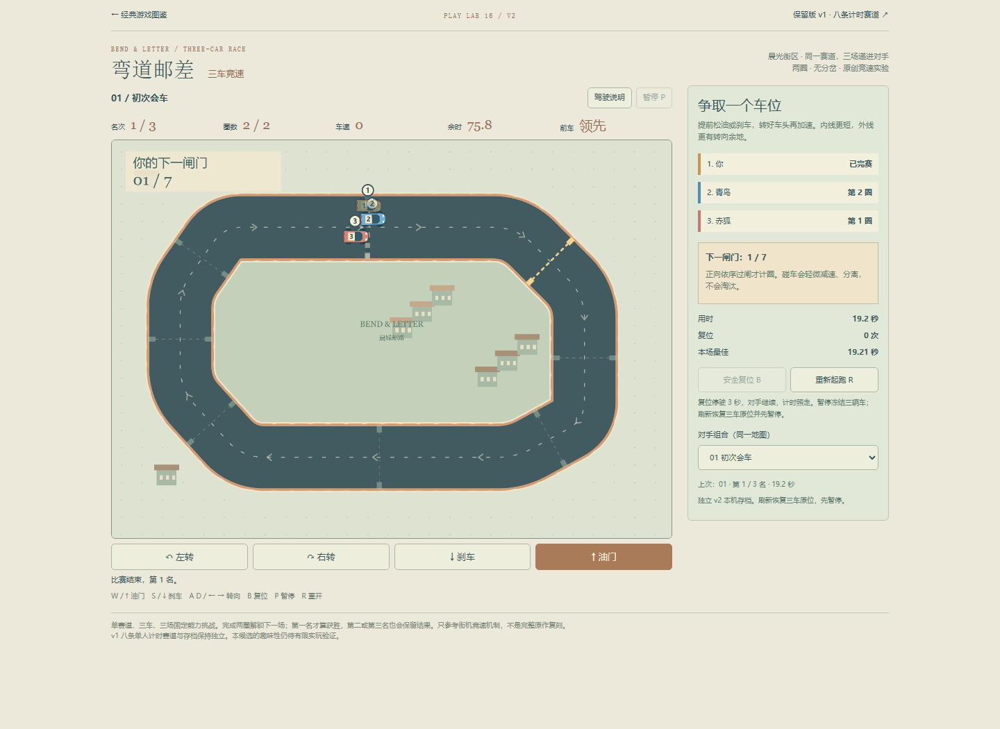
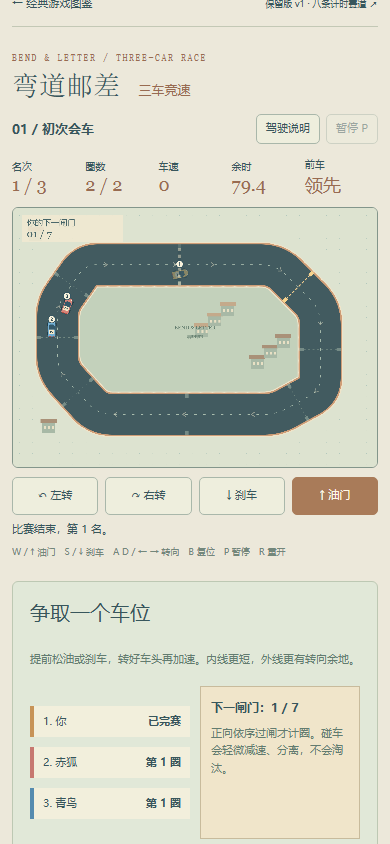
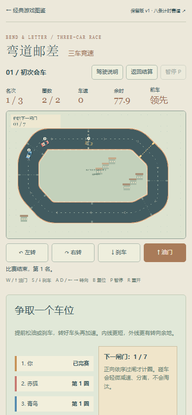

修复前，查看赛场隐藏了结算卡与下一场按钮；成绩和解锁仍在，但没有返回卡片的入口。现在赛场顶部显示“返回结算”，关闭后焦点到入口，Enter重开后焦点到结算主按钮。仅已结束且卡关闭时显示，不重复结算或保存。
基线 abde6a4172967426b54307bd6dae2b4d9b292464。前图来自已验收基线的公开页面正常比赛，后图是本地候选正常比赛；不同比赛的车辆位置、计时与滚动不同。



两视口各自然完成第一场、16次合法过闸；每个5次普通键盘开关结算，快照与存档原字符串不变。桌面验证重开后下一场，390CSS验证终局重赛；两者都检查活动局刷新与非终态入口隐藏。7组控制器fixture单列验证零额外保存/解锁及超时、最终场分支；不是这些分支的自然通关证据。
完整结果与边界 · 基线线上记录 · 本地普通UI记录 · 控制器结果 · 控制器源码 · 普通UI复现 · 上一批地图反馈
不改赛车规则、速度、难度、存档格式或40目录。窄屏是桌面模拟；真人手感、真机多指与审美声音未验。旧终局下一闸文本仍属原有非阻断表现，本批没有扩改。